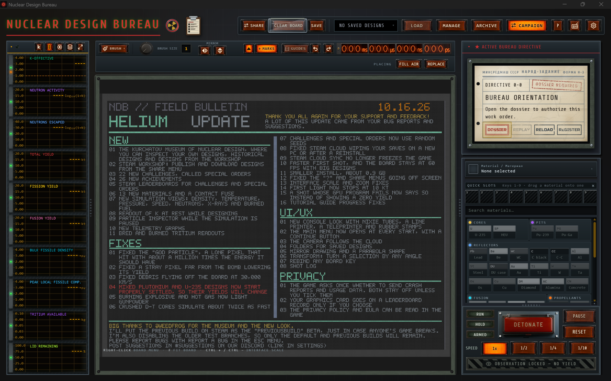

5任务指令卡DIRECTIVE战役的“工作订单”：读任务 → ACCEPT → 完成后 REGISTER 提交▶
整个战役模式的核心。点 DOSSIER 打开任务档案；REPLAY 重看剧情；RELOAD 重置任务状态；REGISTER 提交成果登记完成。
任务档案（STATE DIRECTIVE）抬头：「绝密 · 中型机器制造部」（现实中主管苏联核工业的秘密部委）。指令 0-0 的正文：高级工程师彼得罗夫欢迎你，带你熟悉设施；目标是完成入职引导；署名「库尔恰托夫」。
6材料面板MATERIALS9 大类材料 = 游戏知识框架；Air 也是材料，空格是组件▶
你的“颜料盒”。搜索框可快速定位；把常用材料拖进 QUICK SLOTS（数字键 1–9 取用）；点选材料后顶部信息栏显示密度、临界质量等物性。
- CORES 核芯（铀系）：U 天然铀、U-235、HEU 高浓缩铀、SP；
- PITS 弹芯（钚系）：Pu、Pu-239、Pu-Ga 钚镓合金、PG；
- REFLECTORS 反射层：Pb 铅、Be 铍、WC 碳化钨、C 碳、CC、Al 铝、St 钢、DU 贫铀、Au 金、Ti 钛、W 钨、Ta 钽、Os 锟、Cu 铜、Diamond 金刚石、Alumina 氧化铝、Concrete 混凝土；
- FUSION 聚变燃料：LiD 氘化锂、DT gas 氘氚气体、Foam 泡沫、DT ice 氘氚冰；
- PROPELLANTS 发射药（枪式动力）：Powder 黑火药、Primer 底火；
- EXPLOSIVES 炸药（内爆驱动）：HE/PBX 高能炸药、Baratol 巴拉托、Bridge 传爆桥、Fuse 引信；
- ABSORBERS 中子吸收体（安全次临界用）：B₄C 碳化硼、B-poly 含硼聚乙烯；
- INITIATORS 点火器（起爆注中子）：Urchin“海胆”、D-T gen 氘氚发生器；
- FILLERS 填充物：Air 空气、Hot gas 热气体、Water 水、PE 聚乙烯、Rubber 橡胶、Wood 木材、Aerogel 气凝胶。
2绘图工具栏TOOLBAR画图 / 镜像 / 标记 / 辅助线 / 撤销；完整快捷键见手册附录 D▶
右侧四组数字是模拟计时器（毫秒 / 微秒 / 纳秒 / 皮秒）——核爆物理发生在极短时间尺度，引爆时这里会疯狂跳动。
8网格放置选项FILL AIR / REPLACE放置模式切换；PLACED 计数用格量▶
网格顶部右侧的小开关：FILL AIR 与 REPLACE 切换放置模式；PLACED 统计已使用的格子数。
3中央公告弹窗FIELD BULLETIN「氦更新」10.16.26 版本日志 · 全文翻译，看完即关▶
2026 年 10 月 16 日发布的「氦更新」版本更新日志，不是游戏内容，看完关掉即可。它下面空白的蓝图网格才是工作台——你在这里用材料涂刷装置的横截面（模拟器把 2D 剖面当轴对称体计算，所以对称性至关重要）。全文翻译如下：
- 01核设计库尔恰托夫博物馆：可以 1:1 检视你自己的设计、历史设计和 Steam 工坊下载的设计（就是主界面 ARCHIVE 按钮里的内容）；
- 02Steam 工坊：在分享菜单中发布和下载设计图纸；
- 0322 个新挑战，名为「特殊订单」（Special Orders）；
- 0426 个新成就；
- 05挑战与特殊订单的 Steam 排行榜；
- 0613 种新材料和一个接触式引信；
- 07新的模拟视图：密度、温度、压力、速度、中子、X 射线和燃耗燃料占比；
- 08设计时可以实时读取静态 k 值（不用进实验室也能看装配是否临界）；
- 09模拟暂停时可用的粒子检查器；
- 10新的遥测图表（就是左侧那排）；
- 11氚的增殖（bred）与燃耗读数。
- 01修复「上帝粒子」bug：一个落单像素携带百万倍于应有值的能量；
- 02修复远离弹体的游离像素压低当量的问题；
- 03修复碎屑以 30,000 km/s 飞出画板的问题；
- 04重要（红字警告）：混合钚和 U-235 的设计现在会正确起爆，因此它们的当量会发生变化——老存档的设计数值可能不准了；
- 05燃烧中的炸药和高温气体现在能点燃黑火药（推进剂链式点火修复）；
- 06被压缩的 D-T 核（氘氚聚变芯）模拟速度快了约一倍；
- 08修复 Steam 云在更换电脑或重装后抹掉存档的问题；
- 09Steam 云同步不再卡死游戏；
- 10首次模拟更快，大型设计下画板仍保持 60 FPS；
- 11安装包体缩小到约 0.9 GB；
- 12–13修复「？」和分享菜单超出屏幕、界面缩放与缩放修复；
- 14「First Light（首次点火）」现在止于 10 kt；
- 15与使用 6 GB 显卡的玩家相关：GPU 程序失败的试爆现在会明确提示失败，而不是显示当量为 0；
- 16新手教程进度修复。
- 01新控制台风格：辉光管（Nixie tubes）、行式打印机、电传打字机和橡皮图章——就是你看到的这套复古仪表界面；
- 02每次启动先开主菜单，带「继续」按钮；
- 03镜头跟随蘑菇云；
- 04存档设计支持文件夹分类；
- 05–06镜像绘制 + 抛物线形状；变换工具：选区可旋转任意角度；
- 07画板所有按键可自定义绑定；
- 08试爆日志（Shot Log）。
- 01游戏只询问一次是否发送崩溃报告和使用数据，默认关闭，除非你勾选；
- 02你的显卡型号仅在自愿时进入排行榜记录；
- 03隐私政策和 EULA 可在游戏内阅读。
结尾：感谢玩家 @weedfrog 协助制作博物馆和新界面；旧版本会以「previous build」测试分支保留以防新版本出问题；按 ESC 菜单里的「Report a Bug」报 bug，建议发到官方 Discord 的 #suggestions 频道。底部快捷键提示：右键 = 画板菜单，F = 适配画板，Ctrl + / − = 界面缩放。
4遥测面板TELEMETRY引爆后的“体检报告”：核心看 k 有效值与当量▶
- K-EFFECTIVE（k 有效值）：中子增殖系数，全场最重要的数字。k<1 次临界 / k=1 临界 / k>1 超临界；
- NEUTRON ACTIVITY（中子活度）：log₁₀(1+N) 标度的中子数；
- NEUTRONS ESCAPED（逃逸中子）：log₁₀(1+N)，反映反射层效率；
- TOTAL / FISSION / FUSION YIELD（总/裂变/聚变当量，kt）：能量产出三联表；
- BULK / PEAK LOCAL FISSILE DENSITY（裂变材料密度）：判断内爆压缩倍数（目标 2–3 倍）；
- TRITIUM AVAILABLE（可用氚）：聚变燃料的氚增殖进度；
- LID REMAINING（剩余外壳 %）：装置解体程度。
7引爆控制台DETONATION CONSOLERUN → 掀安全盖 → DETONATE；PAUSE 逐帧诊断；RESET 重来▶
左侧 RUN / HOLD / ARMED 是模拟状态指示；大红钮 DETONATE 左上角的小开关就是“安全盖”；右侧 PAUSE / RESET；下方 SPEED（1× / ½ / ¼ / 1/10）放慢爆炸过程逐帧观察。底部 OBSERVATION LOCKED — NO YIELD 表示当前没有可观察的试爆数据。
1顶部主菜单MAIN MENU存取设计 / 档案馆 / 战役切换；剪贴板=零件库；?=野战手册▶
SHARE 分享设计；CLEAR BOARD 清空画布；SAVE + 存档下拉框；LOAD 读取；MANAGE 管理存档；ARCHIVE 档案馆（=库尔恰托夫博物馆，看历史装置）；CAMPAIGN 回到任务视图；最右 ? 帮助与设置。